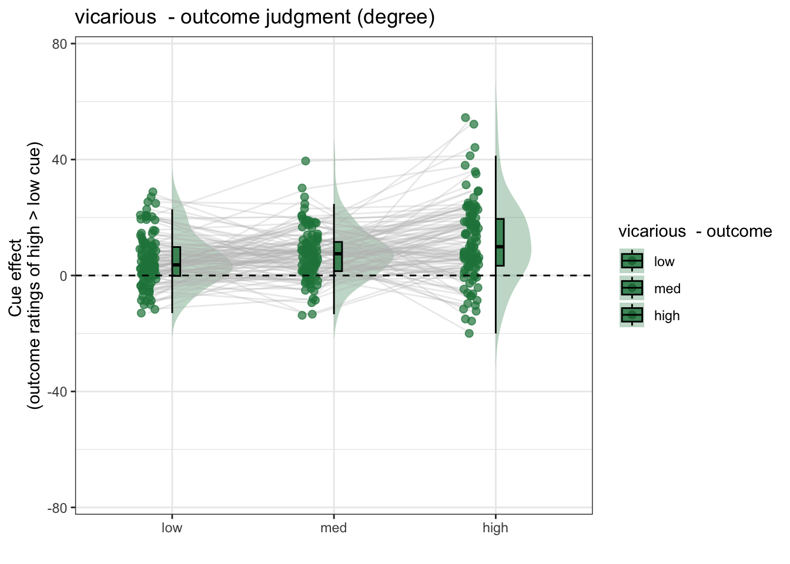
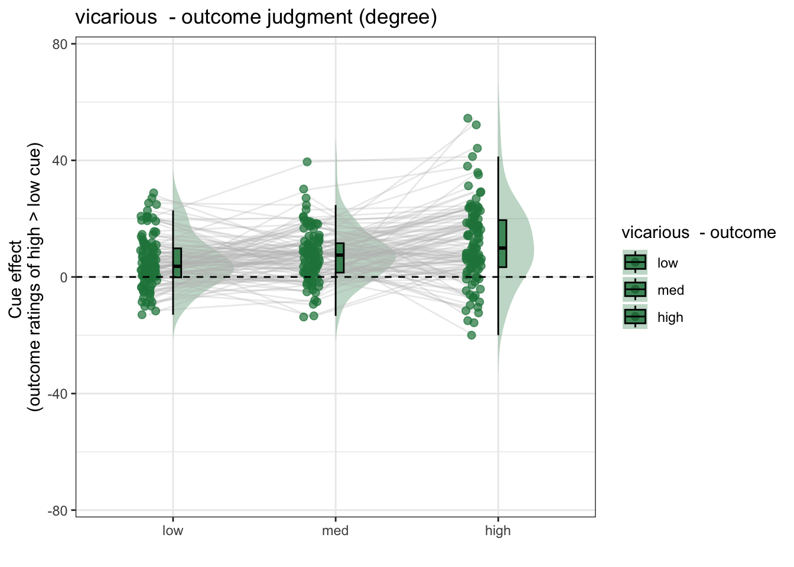

5 [beh] outcome_rating ~ cue * stim
What is the purpose of this notebook?
Here, I plot the outcome ratings as a function of cue and stimulus intensity.
- Main model:
lmer(outcome_rating ~ cue * stim) - Main question: do outcome ratings differ as a function of cue type and stimulus intensity?
- If there is a main effect of cue on outcome ratings, does this cue effect differ depending on task type?
- Is there an interaction between the two factors?
- IV:
- cue (high / low)
- stim (high / med / low)
- DV: outcome rating
5.1 model 03 iv-cuecontrast dv-outcome

 



5.1.3 Nov 17 lmer
# stim_con1 <- "stim_con_linear"
# stim_con2 <- "stim_con_quad"
# iv1 <- "social_cue"
# dv <- "event04_actual_angle"
fullmodel <- lmer(event04_actual_angle ~ 1+ social_cue + stim_con_linear + stim_con_quad + social_cue:stim_con_linear + social_cue:stim_con_quad
+ (1+ social_cue + stim_con_linear + stim_con_quad+ social_cue:stim_con_linear | src_subject_id), data=data)## boundary (singular) fit: see help('isSingular')
summary(fullmodel)## Linear mixed model fit by REML. t-tests use Satterthwaite's method [
## lmerModLmerTest]
## Formula:
## event04_actual_angle ~ 1 + social_cue + stim_con_linear + stim_con_quad +
## social_cue:stim_con_linear + social_cue:stim_con_quad + (1 +
## social_cue + stim_con_linear + stim_con_quad + social_cue:stim_con_linear |
## src_subject_id)
## Data: data
##
## REML criterion at convergence: 54523.3
##
## Scaled residuals:
## Min 1Q Median 3Q Max
## -3.4932 -0.6227 -0.1494 0.4685 7.0856
##
## Random effects:
## Groups Name Variance Std.Dev. Corr
## src_subject_id (Intercept) 160.757 12.679
## social_cue 27.920 5.284 0.37
## stim_con_linear 11.126 3.336 0.60 -0.04
## stim_con_quad 2.765 1.663 0.79 0.24 0.72
## social_cue:stim_con_linear 3.197 1.788 -0.29 0.68 -0.08
## Residual 349.846 18.704
##
##
##
##
##
## -0.15
##
## Number of obs: 6220, groups: src_subject_id, 110
##
## Fixed effects:
## Estimate Std. Error df t value Pr(>|t|)
## (Intercept) 28.4134 1.2360 109.1664 22.988 < 2e-16 ***
## social_cue 8.0490 0.7017 106.1701 11.470 < 2e-16 ***
## stim_con_linear 8.1671 0.6657 106.6467 12.268 < 2e-16 ***
## stim_con_quad 3.0904 0.5350 111.0283 5.777 7.05e-08 ***
## social_cue:stim_con_linear 2.5872 1.1738 1373.9978 2.204 0.0277 *
## social_cue:stim_con_quad -1.6740 1.0200 5843.5215 -1.641 0.1008
## ---
## Signif. codes: 0 '***' 0.001 '**' 0.01 '*' 0.05 '.' 0.1 ' ' 1
##
## Correlation of Fixed Effects:
## (Intr) socl_c stm_cn_l stm_cn_q scl_c:stm_cn_l
## social_cue 0.262
## stim_cn_lnr 0.284 -0.015
## stim_con_qd 0.232 0.049 0.106
## scl_c:stm_cn_l -0.041 0.074 -0.002 -0.008
## scl_c:stm_cn_q -0.001 0.004 -0.002 0.000 0.001
## optimizer (nloptwrap) convergence code: 0 (OK)
## boundary (singular) fit: see help('isSingular')